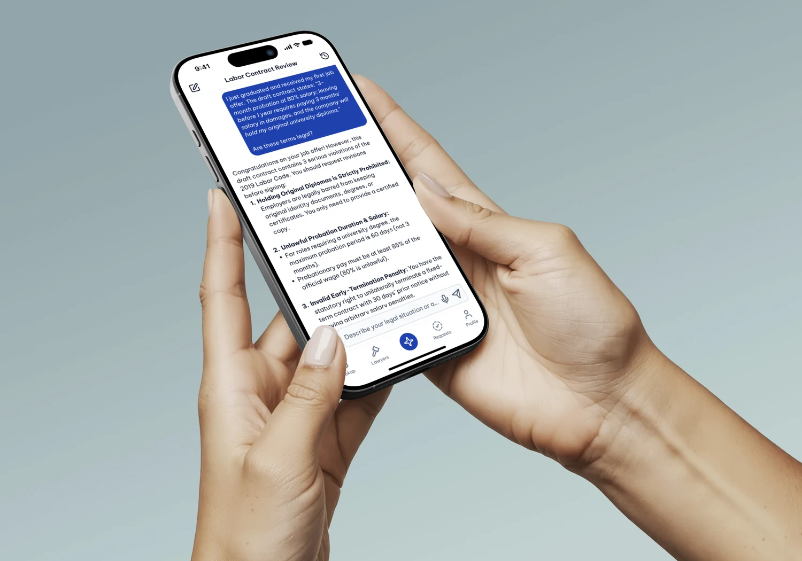

University final project · 2025
VietJusticIA platform
The original build behind the redesign. A mobile legal assistant and a web portal connect document lookup, consultation requests and live chat.
Explore the platformProduct design · Da Nang, Vietnam
I studied computing at the University of Greenwich. Now I’m looking for a UI/UX or product design internship.
I like the precision of an interface and the freedom of a messy sketch. My taste in art leans a little dark, a little whimsical, and usually has a pencil line somewhere.
Selected work · Solo mobile redesign
How does someone go from asking a legal question to checking its source and talking to a lawyer? I redesigned the mobile experience around that journey.
Read the design case study
Development
University final project · 2025
The original build behind the redesign. A mobile legal assistant and a web portal connect document lookup, consultation requests and live chat.
Explore the platformClub’s Week · 2024
A bilingual exam assistant for students asking about the Vietnamese Standardized Test of English Proficiency.
Explore the chatbot